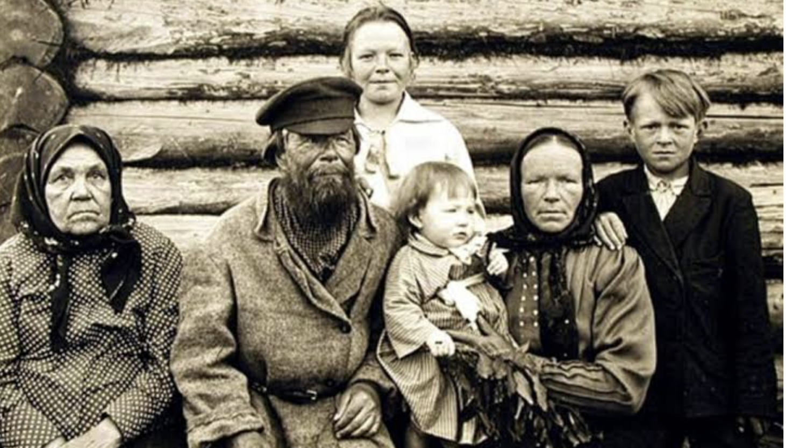
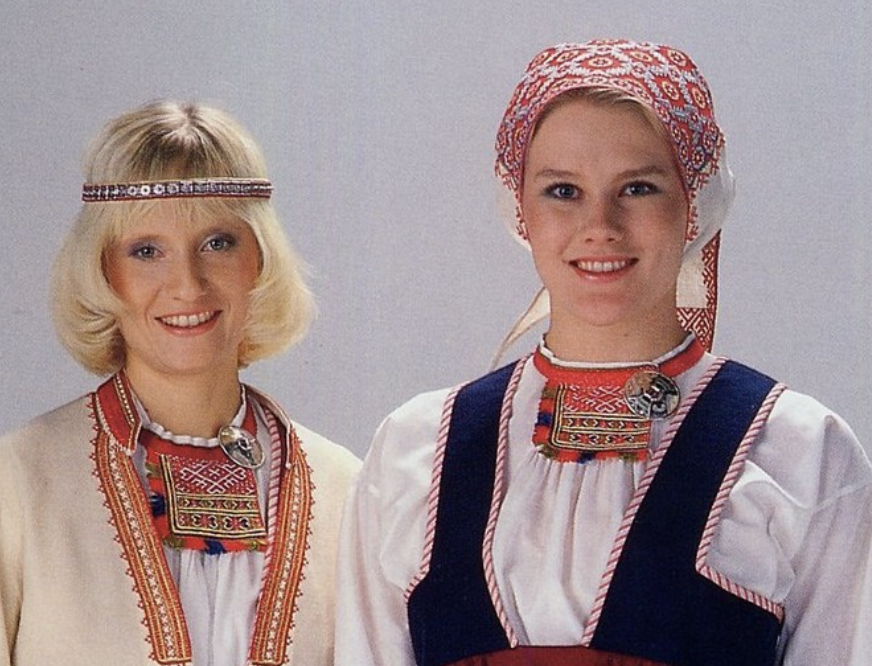
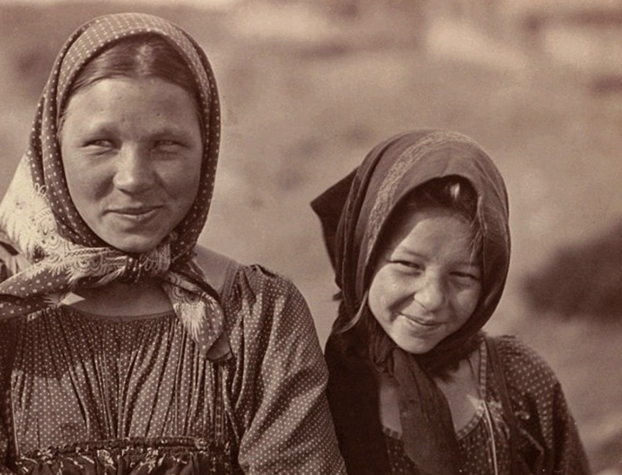
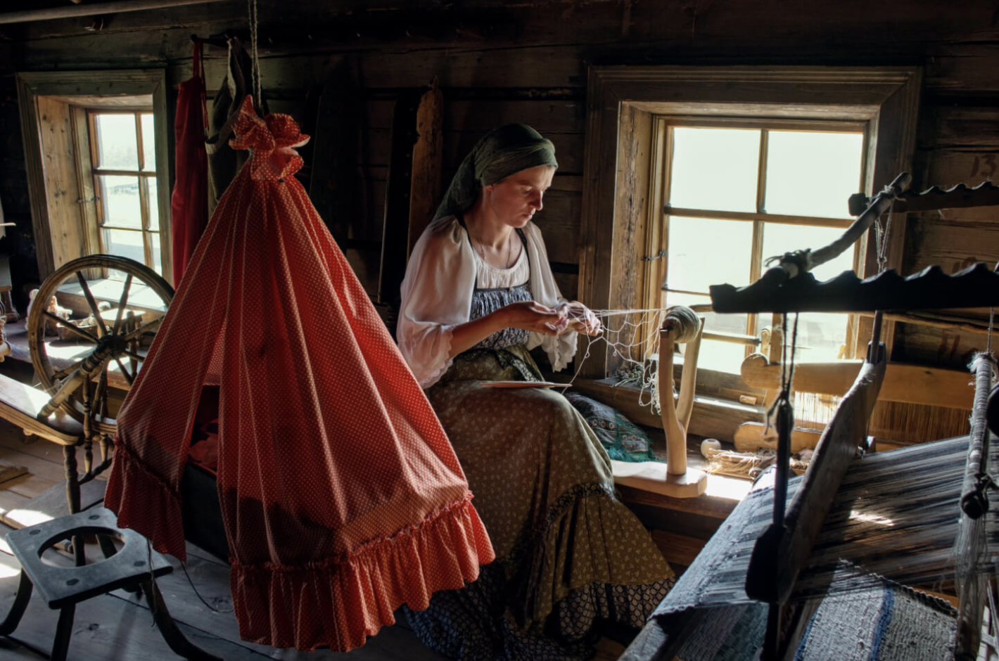
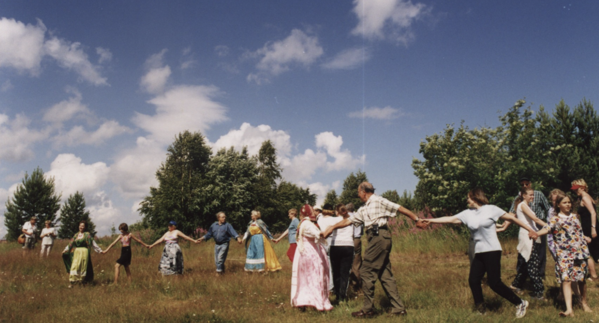
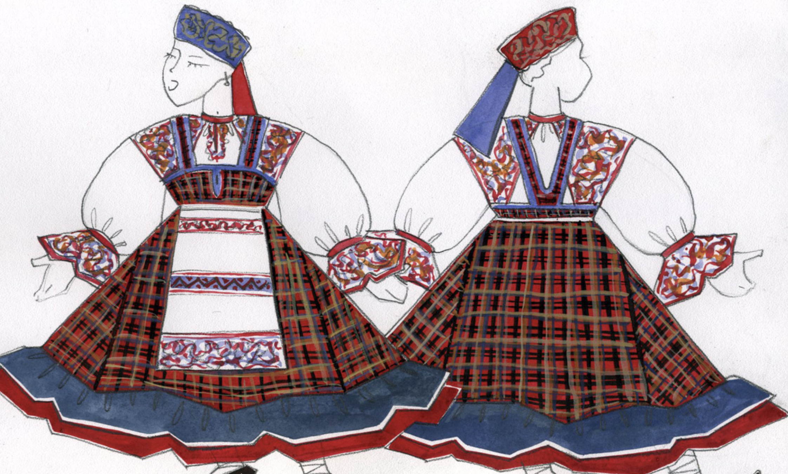
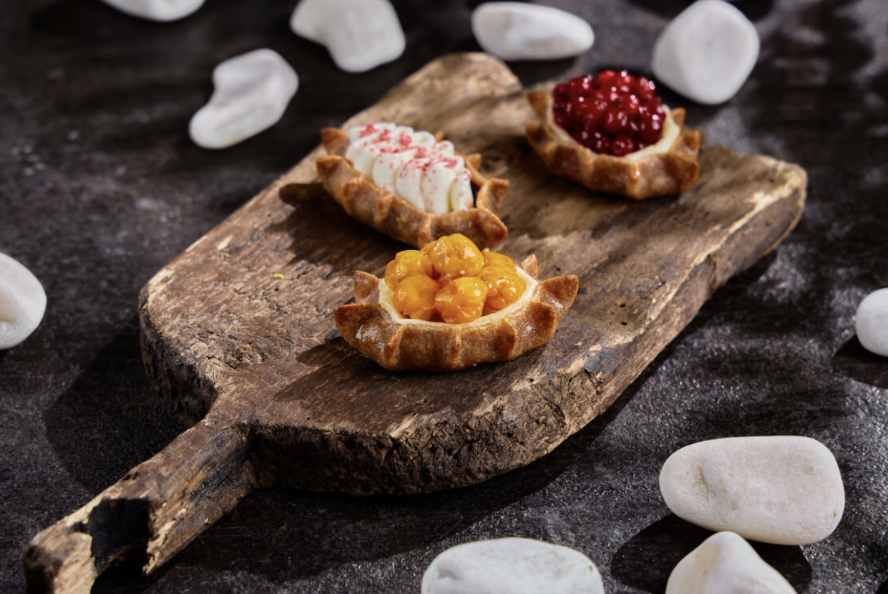
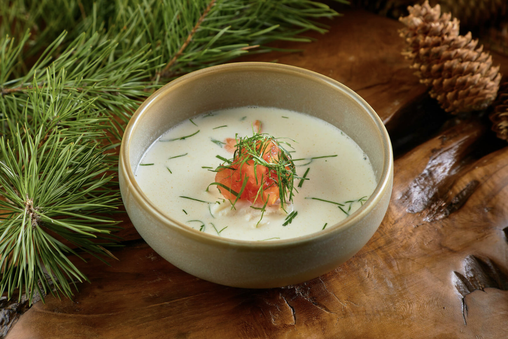

Общий маршрут + (Заонежье, дополнительно):
Рыбрека → Шелтозеро → Шокша → Петрозаводск → Корза → Рубчойла → Кинерма → Киндасово
(→ с остановкой в Петрозаводске) Пегрема* → Шуньга → Толвуя → Кондобережская → Остров Кижи (на катере из деревни Оятевщина)
Карельский этнос состоит из трёх коренных народов региона. В первую очередь это сами карелы, компанию которым составляют ливвики. Их ещё называют олонецкими карелами, потому что когда-то главным городом их народности был древний Олонец XII века. Поскольку ливвики живут на юге республики, то, как и все южане, они веселые и гостеприимные. И третий субэтнос — людики. Они заселили Прионежскую Карелию, главным образом — столицу республики, а также третий по численности город региона Кондопогу.
Однако если снова обратиться к переписи населения, то в скобках после общего названия этноса «карелы» можно также увидеть и многие другие народности: вепсы (в 1937 году этот народ лишили национального статуса, поэтому многие его представители ассимилировались), калевальцы (древний народ, живший на северо-западе современной Карелии), лююдилайне (малочисленные коренные жители Карелии, селившиеся в основном в Прионежье), поморы-карелы (жили на берегу Белого моря, активно осваивали Русский Север, отправлялись в экспедиции на Шпицберген), тихвинские карелы (жили в основном вокруг Тихвинского монастыря, отсюда их название).



Карельский язык относится к редким языкам, в России на нем говорят около 25 тысяч человек. Долгое время язык коренного народа существовал лишь в устной форме, затем письменность неоднократно реформировали. Сейчас карельский алфавит использует латиницу.
Карелы говорят на трех диалектах:
В настоящее время карельский язык не признан официальным языком республики, но поддерживается на государственном уровне. В школах изучают карельский язык, в столичном университете готовят карельских филологов. В обычной жизни на народном языке говорят менее 10% населения и язык находится на грани исчезновения.
Семьи были большие, обычно вместе жило несколько поколений. Быт был очень патриархальный, все подчинялись старшему мужчине в роду. Свадьбы устраивали по расчёту, мнением невесты интересовались мало, всё решалось на семейном совете. Одновременно с этим был широко распространён брак уводом.
Православие в Карелии имеет крепкие и древние корни, недаром здесь до сих пор сохраняется огромное количество церквей и монастырей. Однако языческие верования и традиции здесь никогда полностью не теряли своих позиций. Шаманы, духи и колдуны — неотъемлемая часть карельской культуры. Верования древних карелов основывались на тесной связи с окружающей человека природой. Люди верили, что у всего живого, в том числе и деревьев, есть душа. Поэтому даже заготовка древесины для строительства дома требовала особого подхода, желательно с участием шамана, читавшего особые заговоры. Срубленные деревья не вывозили из леса сразу, а оставляли на месте рубки на сорок дней — умирать. Существовали у карелов и священные рощи духов, в которых деревья рубить было запрещено.
В Карелии, как и во многих других регионах нашей страны, некоторые православные праздники имеют свои особенности. Например, на Пасху здесь не принято ездить в гости, праздник считается чисто семейным, хотя куличи здесь так же освящают и яйца тоже красят. На Троицу здесь часто проводятся кулачные бои между парнями, а девушки в это время слушают кукушек, стараясь по голосам птиц разгадать свою судьбу. Много в Карелии и чисто языческих праздников. Поскольку Карелия туристический регион, то в летний сезон здесь всегда проходит огромное количество разного рода фестивалей.


Домашнюю одежду коренные народы Карелии шили из домотканого льняного или конопляного полотна, домашнего сукна, пряли из овечьей шерсти. Красили одежду натуральными красителями из сока ягод, настоев коры деревьев, луковой шелухи, а также покупными красками. Праздничную одежду изготавливали из покупных тканей: парчовых, шерстяных и шелковых материй. Для теплой зимней верхней одежды широко применяли заячий и лисий мех, кожу домашней выделки и овчину.
Обувь часто была не по карману местным жителям, поэтому летом дети и подростки ходили босиком. Взрослое население носило лапти для работы, промысла и строительства. Зимней обувью традиционно считались валенки. Интересно, что мальчик получал первые штаны только после первой самостоятельной вспашки земли. Затем он мог носить мужские брюки, расшитые для праздников красными нитями.
Женский карельский костюм состоял из рубашки с пышными рукавами и сарафана на узких лямках. Дополнительно наряд украшался поясом или передником. Позже ему на смену пришла одежда из юбки и рубашки.

В основе карельской кухни лежат простые, но питательные блюда из доступных продуктов: свежей рыбы, лесных ягод и ржаной муки, из которой пекли разные вариации пирогов и лепёшек. Особое место занимает рыба. Об этом даже есть поговорка: «Лучше бесхлебье, чем безрыбье». В ход шла буквально каждая часть рыбы: кости перемалывали в муку, чешую использовали для холодца, а икру запекали.
Северные карелы, занятые охотой и рыболовством, чаще употребляли дичь, грибы и ягоды, и избегали свинины и мяса кур (считали их «нечистыми»). Южные карелы активно выращивали злаки, поэтому их рацион включал больше каш, хлеба и пирогов с овощами.
Здесь можно найти рецепты самых популярных карельских блюд.


Правила вежливого гостя: Большинство деревень — жилые, а не музеи под открытым небом. Уважайте покой местных жителей, не фотографируйте людей без разрешения. Экскурсии, баню и обеды всегда заказывайте заранее!